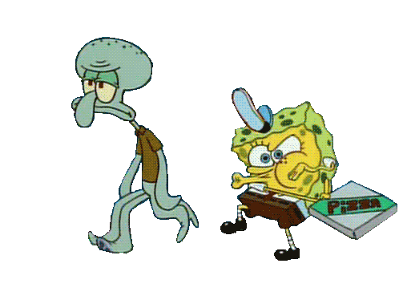

Here are some things about me:
| Name | Ylli |
|---|---|
| Surname | Caka |
| Age | 18 |

I like to do push-ups
on the edge of cliffs

And I also like to dance

And let's not forget gaming

Cartoons are also a passion of mine
| Name | Ylli |
|---|---|
| Surname | Caka |
| Age | 18 |
I like to do push-ups
on the edge of cliffs
And I also like to dance
And let's not forget gaming
Cartoons are also a passion of mine
I was born and raised in Stanovc and graduated elementary and middle school there, and I also still live there,
I graduated high school in Vushtrri, in the Gymnasium Eqrem Çabej
I'm currently a first-year student in Universum College

I recently have been getting into programming,networking and such things that have to do with computers. The thing is I rarely enjoy anything really,but I'm not just enjoying it, I'm loving it. During elementary and middle school, I always changed my mind about what I wanna be when I grow up,a physican, a doctor, a veterinarian, a paleontologist ,etc. When I got into high school , I didn't know what to do ,people told me about Computer Science and such and I began to take interest in it.